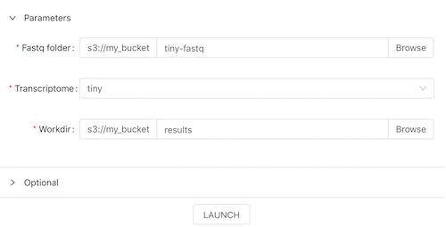
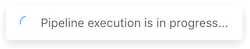
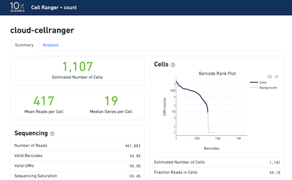

JavaScript implementation
The JavaScript example implementation of the Usage scenario offers a Web form, that allows to specify the job input parameters and submit it into the Cloud Pipeline via the API.
Prerequisites
- NodeJS 10.15.3+
- npm 6.4.1+
Setup the configuration
Locate the JavaScript sample application at js_example or clone the the Cloud Pipeline repository
git clone https://github.com/epam/cloud-pipeline
cd cloud-pipeline/docs/md/api/API_tutorials/attachments/js_example/
Open the configuration file config.js and replace the following values:
<host>- set to the host of the Cloud Pipeline API<storage_id>- set to the ID of the bucket, that is going to be used as a "working directory" FASTQ files and processing results will placed into this bucket
Start the application
# Install dependencies and start the app
# UI will be served on 0.0.0.0:3010
npm install
npm run start
Application description
Once app is built and loaded in the web-browser one can perform the following operations:
- Setup the cellranger parameters
- Set the location of the FASTQ files
- Choose the transcriptome
- Specify the "workdir", where the job will keep the results

- Once the job parameters are set, user can click LAUNCH and the job is submitted to the Cloud Pipeline backend via the HTTP/REST API

- Application will poll the Cloud Pipeline API until the job is finished
- Once done, application will load the cellranger's data processing summary from the job results folder and display it in the web-browser
